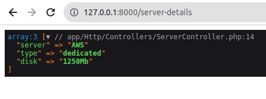

SERVICE PROVIDERS
Service providers are the central place of all Laravel application bootstrapping. Your own application, as well as all of Laravel’s core services, are bootstrapped via service providers.
CREATE SERVICE PROVIDERS
Step 1 :
Run the below artisan command to create a new provider :
php artisan make:provider SiteServiceProvider
This will create new provider class at app/Providers/SiteServiceProvider.php file, with the following code :
<?php
namespace App\Providers;
use Illuminate\Support\ServiceProvider;
class SiteServiceProvider extends ServiceProvider
{
/**
* Register services.
*
* @return void
*/
public function register()
{
//
}
/**
* Bootstrap services.
*
* @return void
*/
public function boot()
{
//
}
}
REGISTER SERVICE PROVIDER
Step 2 :
As we have created new provider class, but the application doesn’t know about it. So we need to add new provider in config/app.php file with list of all provider class.
<?php
return [
'providers' => [
...
App\Providers\SiteServiceProvider::class,
...
]
]
USE OF SERVICE PROVIDER
Step 3 :
The class generally includes two methods, register method and boot method. In register method, we can do implementation of App/Repo/SiteRepo in the service container. In the register method, you will always have access of $app property which provides access for service container.
Write the following code in app/Providers/SiteServiceProvider.php :
<?php
namespace App\Providers;
use App\Repo\SiteRepo;
use Illuminate\Support\ServiceProvider;
class SiteServiceProvider extends ServiceProvider
{
/**
* Register services.
*
* @return void
*/
public function register()
{
$this->app->bind('SiteRepo', function($app) {
return new SiteRepo();
});
}
}
After registering SiteRepo class we can use this class.
So we need to create this class. A details method will return server details for the website.
<?php
namespace App\Repo;
use App\Repo\SiteRepo;
class SiteRepo
{
/**
* return site details
*
* @return void
*/
public function details()
{
return [
'server' => 'AWS',
'type' => 'dedicated',
'disk' => '1250Mb',
];
}
}
Now use SiteRepo class in controller file like this :
<?php
namespace App\Http\Controllers;
use App\Repo\SiteRepo;
use App\Http\Controllers\Controller;
class ServerController extends Controller
{
public function index(SiteRepo $siterepo)
{
$server_details = $siterepo->details();
dd($server_details);
}
}
Create route in routes/web.php file to access details.
<?php
use App\Http\Controllers\ServerController;
Route::get('server-details', [ServerController::class, 'index'])->name('index');
Now when you visit this route, you will get server details as defined in SiteRepo class.
